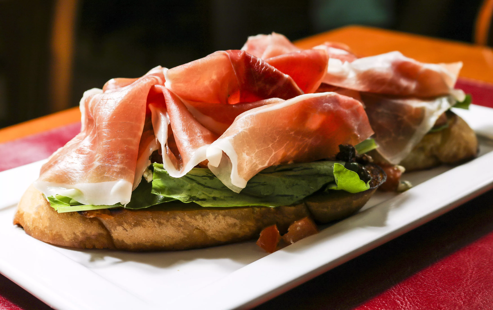
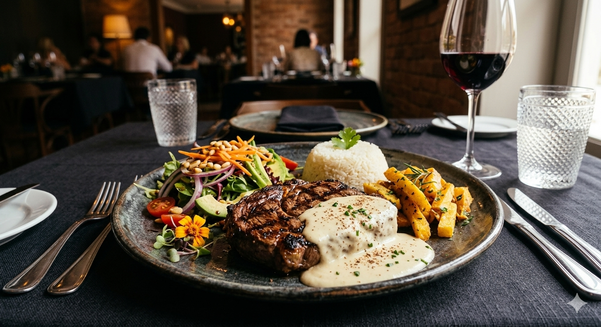
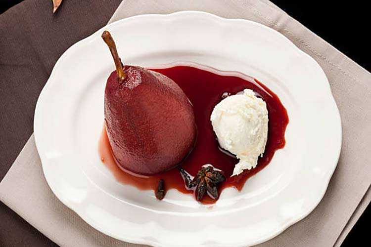

Abertura
Bruschettas de Presunto Parma & Vinagrete
Presunto Parma, queijo parmesão, folhas de manjericão, tomate e azeite de oliva.


"A melhor companhia é aquela que torna cada refeição especial."
Prato Principal
Alcatra grelhada ao molho Bechamel
Alcatra grelhada com molho bechamel, batata souté, arroz e salada mista com tomate cereja, rucula, pepino e palmito.

"Onde há amor, há sabor em cada detalhe."
Final Doce
Pera assada no vinho tinto
Pera assada no vinho tinto, canela em flocos, creme de leite e sorvete de baunilha.

Harmonização

Vinho Tinto Reserva
Garrafa Selecionada

Drink Apaixonados
Moscow Mule

Criando memórias eternas